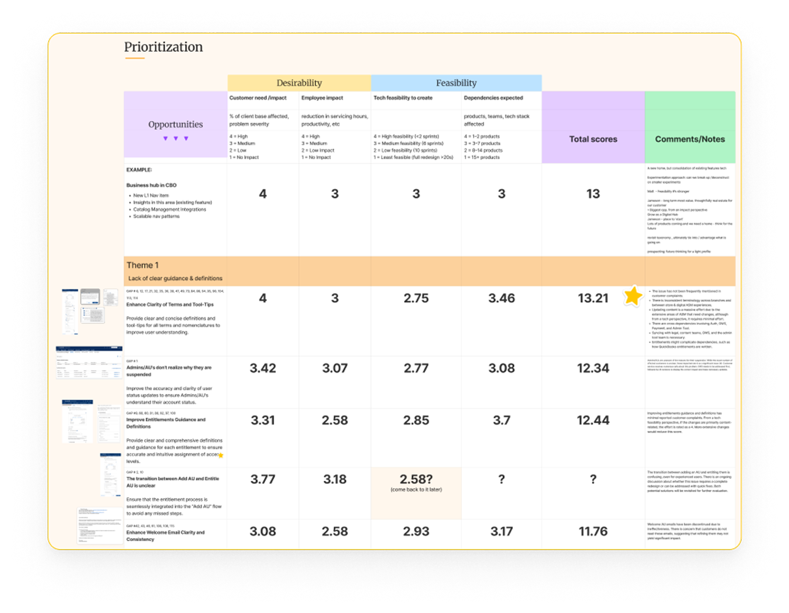

The Journey to a
Customer-Centric
Access Platform.
When customers can't confidently grant access to their own accounts, they either call support or over-privilege their employees. Both signal a broken experience. I led the UX strategy for ASM — a permissions platform serving 8.7M business customers — driving cross-functional alignment and validated concept design toward a simpler, clearer way to delegate access.
Engagement Overview
A Five-Phase Journey from Alignment to Delivery
This engagement spanned two years — each phase building on the last, moving from a shared understanding of the problem through validated design concepts to MVP execution currently in delivery.
My Contribution
What I Led
Overview
What is Access & Security Manager?
ASM is the bank's entitlement platform — the system through which business customers manage user access, roles, and permissions across their banking accounts. It is the operational backbone of how organizations control who can do what within their accounts.
The platform spans three distinct banking segments — Business Banking, Commercial Banking, and Private Banking — each with its own administrator tier, complexity level, and user expectations. Despite its critical role, ASM had grown fragmented, inconsistent, and difficult to use over more than a decade of organic growth.
Our Customer
Meet Janet — The Small Business Owner at the Center
The primary ASM user is a small business owner like Janet — someone running a local business who needs to give trusted employees the right level of access to company accounts, without needing a banking or IT background to do it.

The Problem
Where Today's ASM Falls Short
Three persistent pain categories surface across every research touchpoint — representing failures at ASM's most fundamental job.

What We Heard
Straight From Our Customers
Research Participant
"I like having other people sign in to the account and have access — but it's not the most streamlined process."
Business Banking Customer · September 2023
Cross-Functional Alignment
There's No Simple, One-Size-Fits-All Approach
Solving ASM required alignment across four disciplines — Product, Tech, Design, and Data. I facilitated the Quad alignment model to ensure every decision was grounded in the customer, not internal priorities.
at Center
Aligning on the Problem
Understanding the Problem
Before any research or design work could begin, the team needed a shared definition of what ASM was supposed to help customers accomplish — and what was getting in the way.
As a business owner, I need to delegate financial management to staff and trusted partners (bookkeepers, accountants, advisors) without giving up control or introducing risk.
Adding and entitling sub-users is so overwhelming and unclear that owners abandon the task — or worse, hand out full access just to move on.
Permissions are hard to map to real business roles and needs.
Documentation doesn't build confidence in security decisions.
Notifications fail to confirm whether actions actually succeeded.
The overall difficulty of the entitlements experience makes owners want to abandon the task entirely.
Owners either over-permission their teams, second-guess every decision, or absorb the work themselves — concentrating risk and bottlenecking the business.
Vision & Success Criteria
What We Set Out to Build
Discovery Journey
A Multi-Milestone Research Program
I structured discovery as a sequenced research program — each milestone building on the last, from platform assessment through validated concept directions. The goal was a complete evidence base before any design direction was committed to.

Discovery Journey — Step 1
Get to Know Our Customers
What did we want to learn?
Profile Harmonization
Four Validated SMB Personas
I led a cross-functional harmonization workshop with 25 attendees to align on who ASM's customers actually are. We converged on four personas — each mapped to their organizational role, access level, and entitlement complexity. These became the shared language across product, marketing, and customer success.


Workshop Output

Workshop Outcome
Six Key Customer Themes
Six themes emerged as the defining expectations of business banking customers — forming the design criteria against which every concept direction was evaluated throughout the initiative.
Profile Harmonization Quant Study
Quant Study Results — Executive Summary
Goal: To identify the "actors of influence" that SBOs work and consult with in their businesses. (Sept. 2023)
- Business Owner
- Accountant
- Accounts Payable & Receivable
- Bookkeeper
- Business Partner
- CFO
- Accounts Payable
4 consistent with prior work · 3 new: AP&R, CFO, AP · General Manager removed
- Paying bills
- Paying employees
- Receiving payments
- Analyzing business finances
- Add/remove employees & vendors to financial accounts
- See & refund transactions on Smart Terminal and POS app
- View activity and balance
- View and download tax documents
- Bill pay
- View statements, documents, and disclosures
Discovery Journey — Step 2
ASM CX Assessment
What did we want to learn?
Key Use Cases
- Onboarding / entitling authorized users
- Sharing primary admin duties
- Duplicating rights between authorized users
ASM CX Assessment — Service Blueprint
End-to-End Experience Mapped
The service blueprint mapped the complete SBO / Admin / AU / Proxy Admin flow — connecting frontstage customer actions to backstage systems and surfacing the moments of friction, confusion, and drop-off that the redesign needed to address.

ASM CX Assessment — Heuristic Evaluations
14 Evaluators, 3 Use Cases
Utilizing three use cases and fourteen evaluators, the experience was assessed against our CX Framework — rating each touchpoint to surface the most critical usability failures and opportunities to streamline the end-to-end experience.

ASM CX Assessment — CX Gaps
100+ Gaps, RICE-Prioritized for Impact
After identifying over 100 gaps, I collaborated with our quad partner to prioritize them using the RICE methodology, focusing on desirability and feasibility. Five gap themes surfaced as the highest-priority opportunities.
CX Gap Theme Synthesis Visual
Replace with final asset
-
01Lack of GuidanceCritical
-
02Missing Status IndicatorsCritical
-
03Missing FunctionalityHigh
-
04Mental Model MismatchHigh
-
05Inconsistent DesignMedium
RICE Prioritization Matrix
Each opportunity was scored across desirability and feasibility dimensions — customer need, employee impact, technical complexity, and dependencies — to produce a total RICE score that anchored the design backlog and stakeholder prioritization conversations.

Discovery Journey — Step 3
Future State Explorations
What did we want to learn?
BRM Advisory Board
Strong Enthusiasm for Role Templates — With Important Nuance
BRMs provided strong enthusiasm and support for role-based templates as a concept. The advisory conversations also revealed that the nuances of what permissions are best for each role template — and how to handle custom roles — required further research before locking in a specific approach.
- Business Owner / Leaders — all entitlements on
- Strategic Financial Roles (Accountant, Bookkeeper) — all on except certain Checking/Credit card permissions
- Operational Financial Roles (AP/AR) — operational access only
Blue Sky Concept Test
Concepts Tested
We kicked off the design of the blue sky concepts with two distinct prototypes based on ideas pulled from research, gap discovery work, heuristic evaluations, and collaboration from the entire product team.
Prototype A — User-Focused Concept
Prototype B — Company-Focused Concept
Dashboard-first view — at-a-glance summary of user actions, pending transactions, and admin profile.
Consolidated user list with quick-action shortcuts and a proactive Insights panel for security alerts.


Prototype Insights
What the Prototypes Revealed
Our Vision
What We Set Out to Build
Our vision is to empower business owners to securely define employee access through an intuitive experience that ensures the right access levels across all channels.
With this enhanced capability, business owners will feel secure in delegating access to their financial products to complete core jobs to help them run their business.
Discovery Journey — Step 5
Co-Creation
What did we want to learn?
Co-Creation Workshop
Four Concepts, Co-Designed With Customers
Workshop goal: conceptualize a next-gen entitlements experience enabling business owners to quickly, confidently, and securely assign permissions based on employee roles. By end of Day 2, the ASM Quad, product partners, and 6 SB customers had co-designed and tested 4 user-centric solutions.


Discovery Journey — Last Step
Test Current State Experience
What did we want to learn?
Benchmark Test
Validating the Gaps With Real Data
250+ BB/CML/PB users were tested on 3 flows in current-state ASM: adding a sub-user (Accountant), adding their entitlements, and promoting a user to proxy admin. The results confirmed the severity of the identified gaps — and established the baseline to measure the redesign against.
Research Participant
"So I know I'm in the right screen [...] but I don't see 'add user'."
User searching for the Add User button
Research Participant
"Could this be tiered so that it's easier to use and go through it?"
User on the entitlements page
Research Participant
"The layout is not great to create a proxy admin and to add an authorized user. Those links should be clear."
User on the All Users page
Define Journey — First Step
Define, Refine and Test
What did we want to learn?
Refined Entitlement Concepts
Three Directions Tested With BRMs and Customers
The team iterated on the top co-creation directions and tested three refined concepts with Business Relationship Managers and customers. Each direction addressed the core research findings from a distinct angle, with clear tradeoffs for engineering prioritization.


Dual Track Roadmap
Two parallel tracks defined our path forward — Modernization for incremental CX improvements, and Redesign for the full future-state entitlements experience.

What We Learned
Key Takeaways From Define Phase
Testing three distinct entitlement models surfaced a consistent signal. These learnings directly shaped the design refinement work in Phase 4.
Concept Testing
Testing Our Refined Entitlement Concepts
The team further iterated and refined the top entitlement designs and tested them with Business Relationship Managers (BRMs) and customers — bringing three distinct directions into a second round of structured testing.

Tabbed grouping based on common financial jobs to be done

Permissions grouped by financial products

Most closely represents current state — used as the benchmark baseline
Research Insights
What Refined Testing Revealed
A second round of concept testing with BRMs and customers produced four consistent signals that directly shaped the MVP design principles.
Actionable Design Principles
What Goes Into the Next Design Iteration
Where We Are Today
From Discovery to Delivery
The team is currently executing the MVP Entitlements redesign — moving the Octagon component work forward by migrating the legacy BlueJS implementation to React, paired with targeted design enhancements that address the highest-priority CX gaps identified across two years of research.
Delivery Roadmap

MVP Delivery · 2026
The MVP Entitlements Experience
The first shippable milestone — a redesigned entitlements flow built on the Octagon component system, incorporating the highest-priority CX improvements identified through research. The longer-term north star, a fully role-based entitlements experience, is currently back in active discovery.

Retrospective
What We've Learned Along This Journey
Outcomes
A Multi-Year Foundation — Now in Delivery
The initiative delivered a comprehensive research and strategy foundation that aligned leadership across product, engineering, and business lines — and a delivery roadmap now actively driving multi-year investment in ASM's future.
Reflection
"Two years from discovery to delivery taught me that great design leadership isn't just craft — it's making the complex navigable for your team, your partners, and your customers."
What's Next
Role-Based Design Meets SecureAccess
With the MVP entitlements redesign in delivery, the next chapter brings two parallel threads together — a return to role-based discovery to design and validate the full entitlements experience, and the introduction of SecureAccess, a vision for what ASM becomes when AI is built into the core of how access is managed.
What came next
"ASM told me what the problem was. SecureAccess is my vision for how AI could finally solve it."